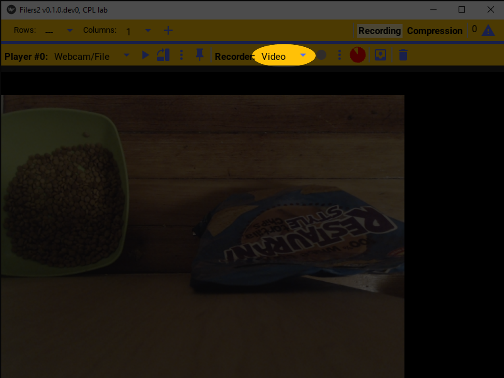
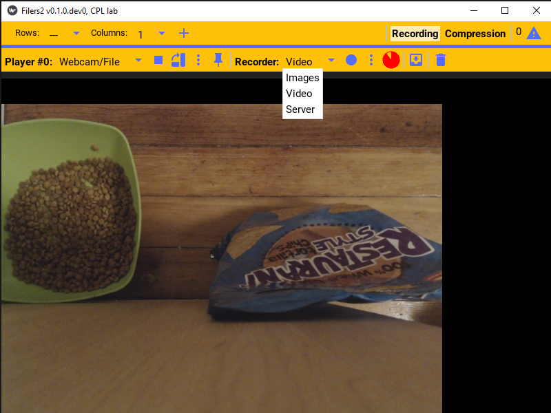
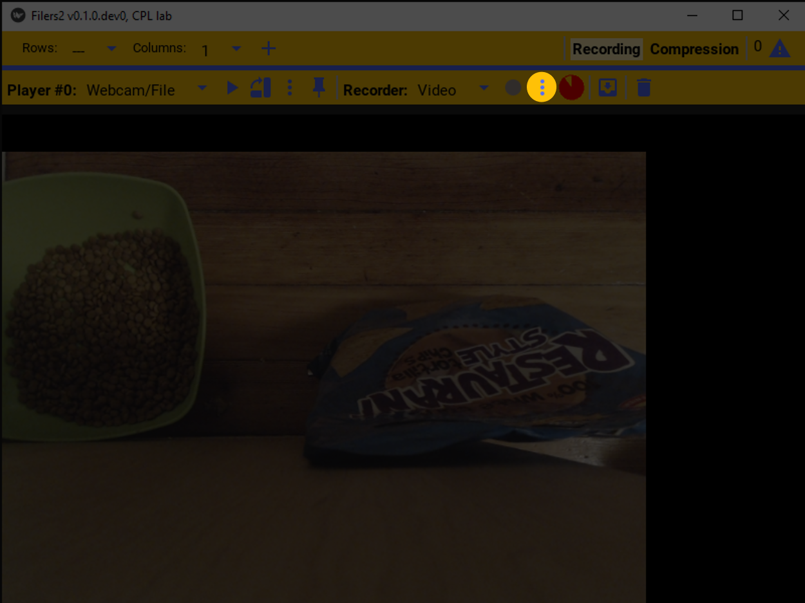
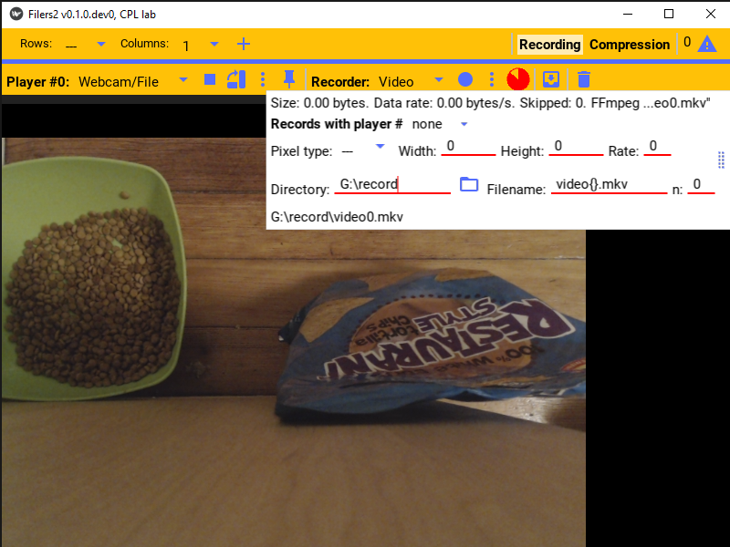
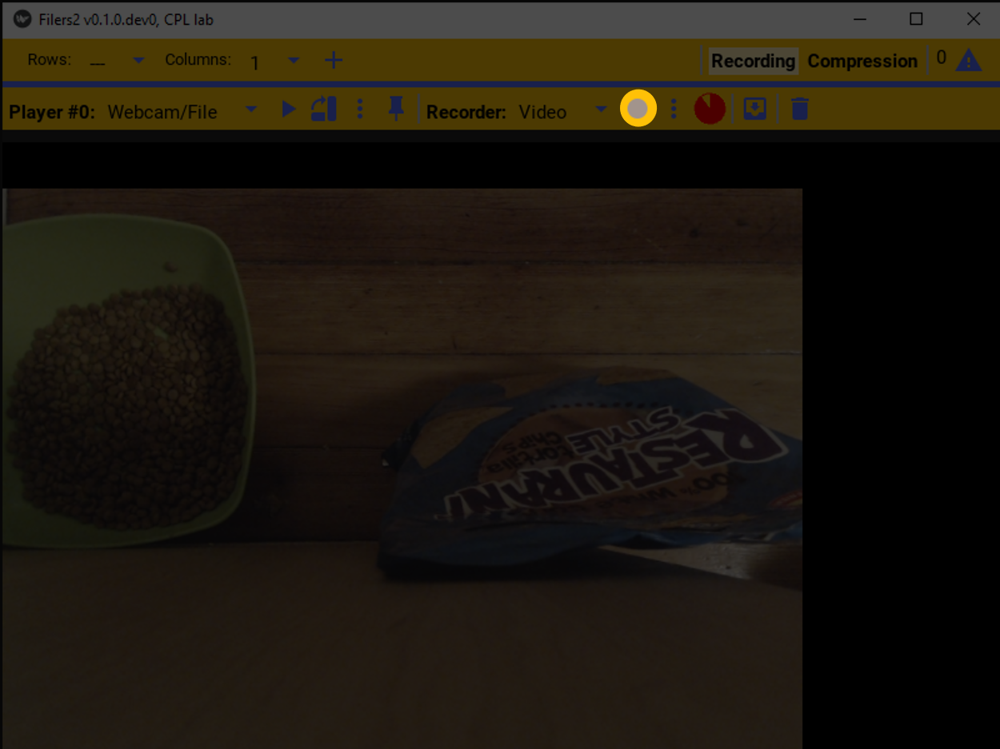
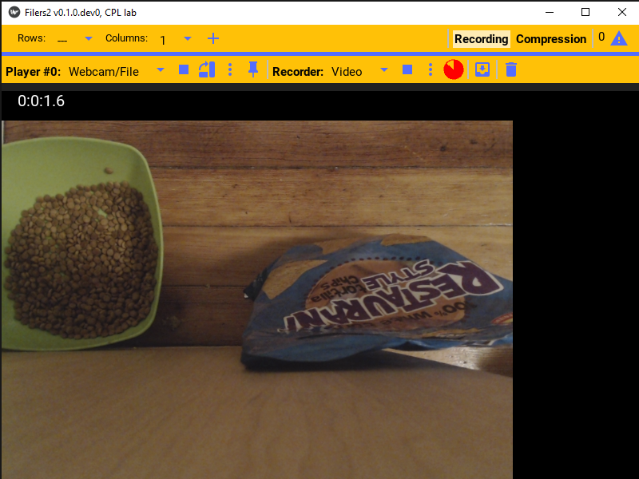
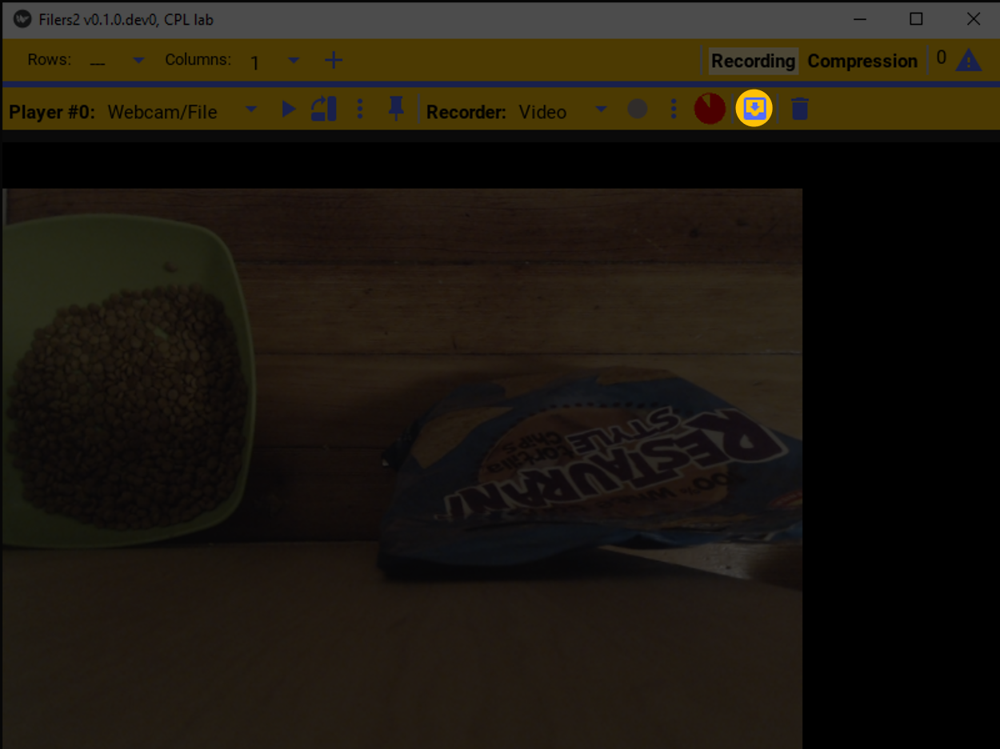
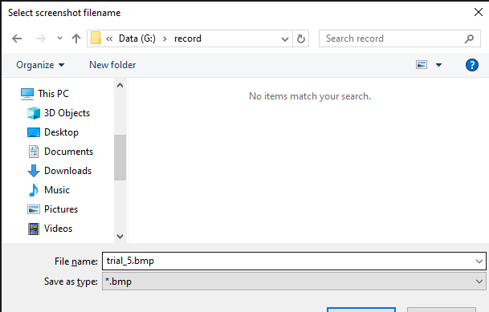
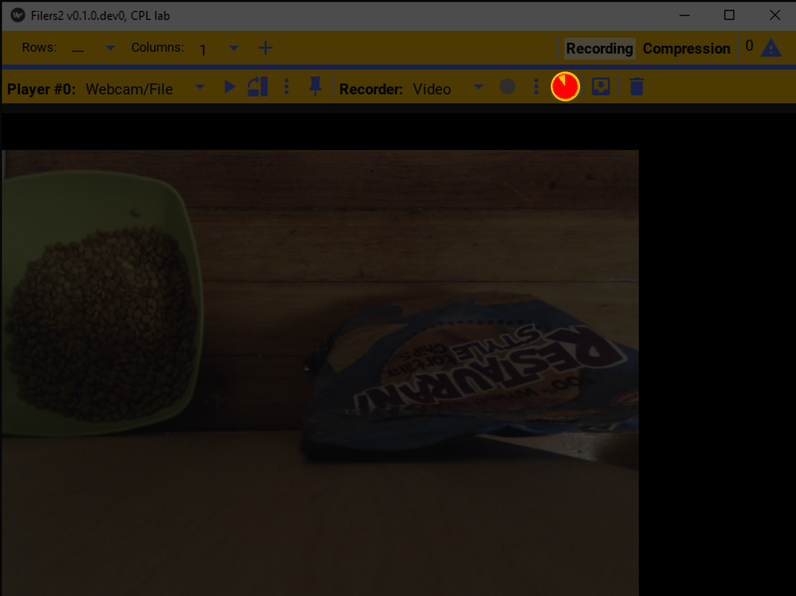

Recorder
Recorder is the general term used for the setting that specifies the “recorder sink” to which a Filers2 player sends its video stream. If there is no recorder specified, the video is simply displayed on screen. A video file on disk is the most typical recorder sink, but streaming data also can be sent to a virtual server to be received by another Filers2 player or a third-party software package, or saved as images.
Each player’s recorder can be independently configured.

Recorder configuration
Similar to the player source, one must first select the type of recorder sink that will be used by the recorder to “save” the video. In the record bar click the record sink dropdown menu.
This will list the available recording options. This example will use a video file!
To configure the selected recorder, click the settings button. That will open the selected recorder’s settings.
This specific recorder saves the video to a video file.
Recorder control
Once configured, to start recording the player’s image, just press the record button. The record button will be grayed out when the camera is not playing.
Once the camera is playing and the video is being recorded, a timer counting up will display showing the elapsed recording duration.
To stop recording, press the record button again and it’ll stop recording. If the player stops playing, the recorder will also stop.
At the top of the recorder setting, it indicates the total size of the current or last recorded files as well as the data rate.
To save a screenshot of the last image displayed, press the save button.
This will pop open a file browser with the image name pre-filled to the video name.
The pie icon indicates how full the disk is on the drive where the video is being saved. Red indicates the proportion of used space, while yellow is the remaining free space.
Synchronously recording from multiple cameras
To review, although you can set up as many players as you want, with or without recorders, they can all be started/stopped independently of one another. And similarly, each player can record independently of any other player.
If you want, instead, to control the recorders associated with a set of players as a single unit, such as for recording from multiple camera angles on a common target, then you need to organize the control of these recorders into a daisy chain, where recoding the first will record from all of them. Note, also, that you still configure the players and their recorders (e.g. data files) independently ahead of time.
Specifically, in the recorder options you can specify if the recorder should start recording when a specific other player starts recording by setting the Records with player # dropdown to the appropriate other player number.
To set up three players (A, B, and C) to record synchronously, choose one (e.g. A) to be the master player. Then set player B to record with player #A and set player C to record with player #B. Then, when you start and stop recording player A, the other two players will also simultaneously start and stop recording.